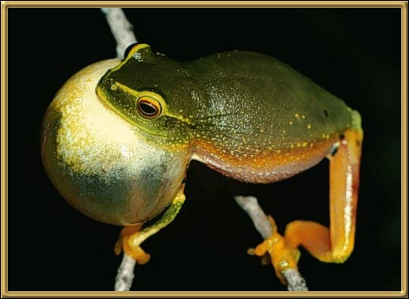

Okay, I admit it, this frog doesn't look particularly
dainty at all! They prefer to live in streamside vegetation and plantation crops,
and are well known for travelling south with the produce! Particularly bananas!
They are found mainly through the coastal regions of Queensland.
Photographer: Ross A Alford